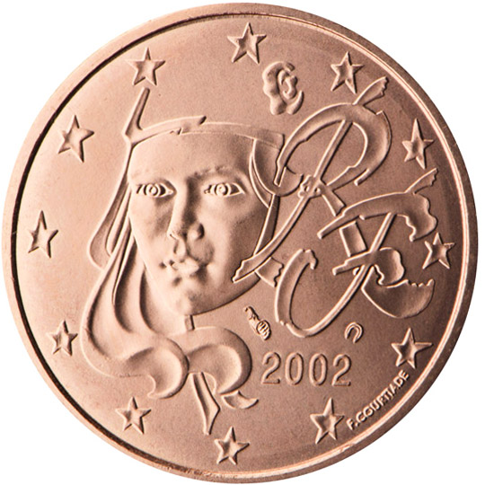

프랑스

| 2018년 01월 14일 |
인천(ICN), 파리(CDG) |
| 01월 15일 | 생미셸 광장, 루브루 박물관, 노틀담 대성당, 개선문, 최고재판소, 생트샤펠, 상제리제 거리, 콩코드 광장, 바스티유 광장, 시청사 |
| 01월 16일 | 오르세 박물관, Academic Nationale de Musique, 에펠탑 (저녁), 마카롱 |
| 01월 17일 | 몽생미셸 |
| 01월 18일 | ???? |
| 01월 19일 | 센강 유람선, 베르사이유 궁전 |
| 01월 20 ?? 일 | ICN |
느낀 점, 배운 것
- 엄마와 소운이가 쓴다
프랑스 대혁명 (1789년 7월 14일)
민주주의의 초석으로 평가 받는 시민들의 자유주의 혁명이다. 프랑스를 상징하는 많은 것들이 프랑스 대혁명으로부터 유래했다.- 국기: 파랑, 하양, 빨강으로 이루어졌으며, 각각 자유, 평등, 박애를 상징한다.
- 국가 라 마르세예즈: 마르세유 행진곡이라는 뜻으로, 마르세유 의용병들이 파리에 입성할 때 부른 노래이다. 가사는 매우 호전적이다.
일어나라, 조국의 자녀들아! 영광의 날이 왔노라!
-중략-
(후렴)무장하라, 시민들이여,
대오를 갖추라, 전진, 전진!
저 더러운 피가 우리의 밭고랑을 적시도록!
- 마리안: 아래 참조
마리안 (Marianne)
마리안은 '자유, 평등, 박애'의 프랑스 혁명 정신을 상징하는 가상의 여성을 말한다. 프랑스 대혁명 시기에 혁명과 공화정의 가치를 담고 있는 여성을 마리안이라고 부르기 시작한 것으로 알려져 있으며, 당시 서민층에서 흔한 여자 이름이었기 때문이라는 설이 가장 유력하다. 들라크루아의 1830년 작품 《민중을 이끄는 자유의 여신》을 통하여 구체적인 이미지를 갖게 되었으며, 프랑스가 미국 독립 100주년 축하 선물로 보낸 뉴욕 자유의 여신상도 마리안상의 하나이다. 프랑스에서 보이는 여자의 동상, 이미지는 대부분 마리안으로 생각하면 된다.| 프랑스 정부 로고 | |
|  | |
| 들라크루아, 1830년, 《민중을 이끄는 자유의 여신》 |
프랑스 유로 동전의 마리안 도안 |
갈리아, 켈트족
- 갈리아: 프랑스, 벨기에, 룩셈부르크, 스위스, 라인강 서쪽의 독일 지역을 가리키는 그리스어.
* 갈리아 전쟁기: 율리우스 카이사르가 직접 쓴 책으로 기원전 58년부터 기원전 51년까지 9년에 걸친 갈리아 정복 전쟁을 기록하였다. - 켈트족: 정확히 일치하지는 않지만 갈리아 지역에 살았던 민족을 가리킨다.
에펠탑
1889년 프랑스 혁명 100주년 기념 세계박람회의 출입 관문으로 건축되었다. 에펠 탑의 높이는 324 m이며, 약 80층 높이의 건물과 맞먹는 높이이다. 1930년뉴욕의 크라이슬러 빌딩이 완공되기 전까지는 세계에서 가장 높은 건축물이었다. 에펠탑의 설계자인 귀스타브 에펠은 뉴욕 자유의 여신상도 설계하였다.참고로, 세계박람회는 1851년 영국 런던 하이드 파크의 수정궁에서 처음 열렸으며, 지금은 인지도가 많이 떨어졌지만 당시에는 올림픽보다도 중요도가 높은 세계적인 행사였던 것 같다. 우리나라는 1993년 개발도상국 최초로 대전엑스포를 개최했으며, 2012년 여수엑스포도 개최하였다.